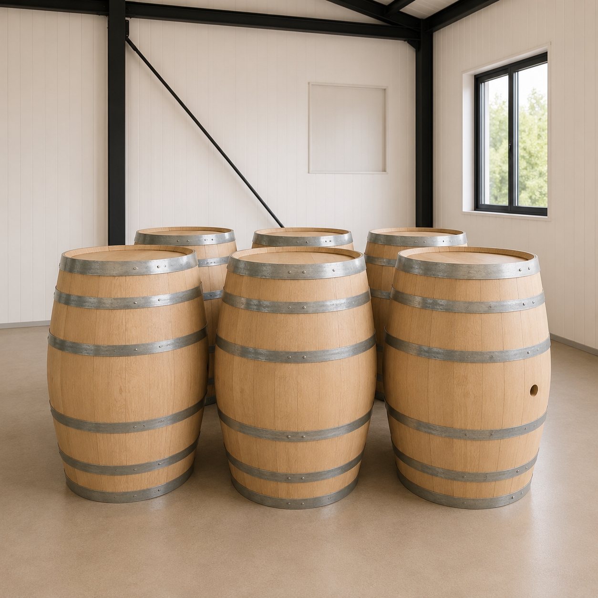
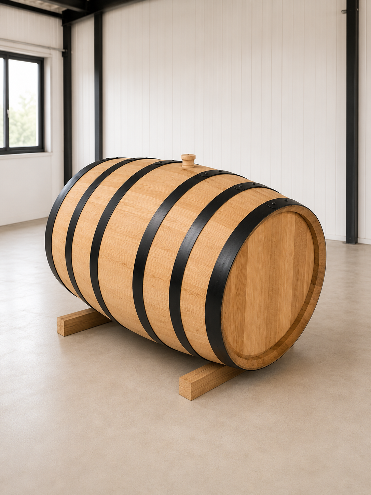
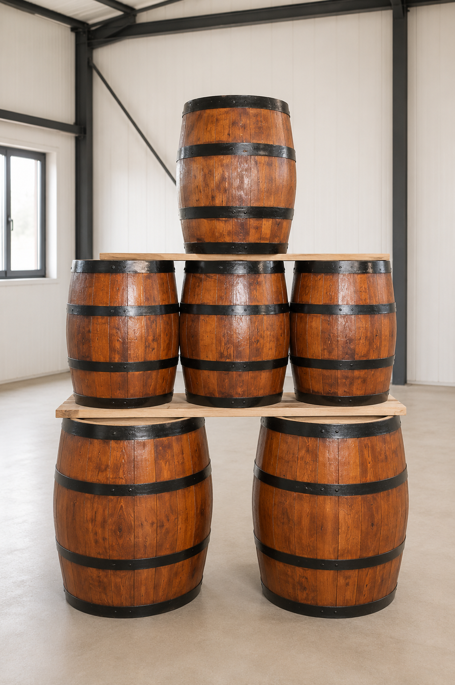
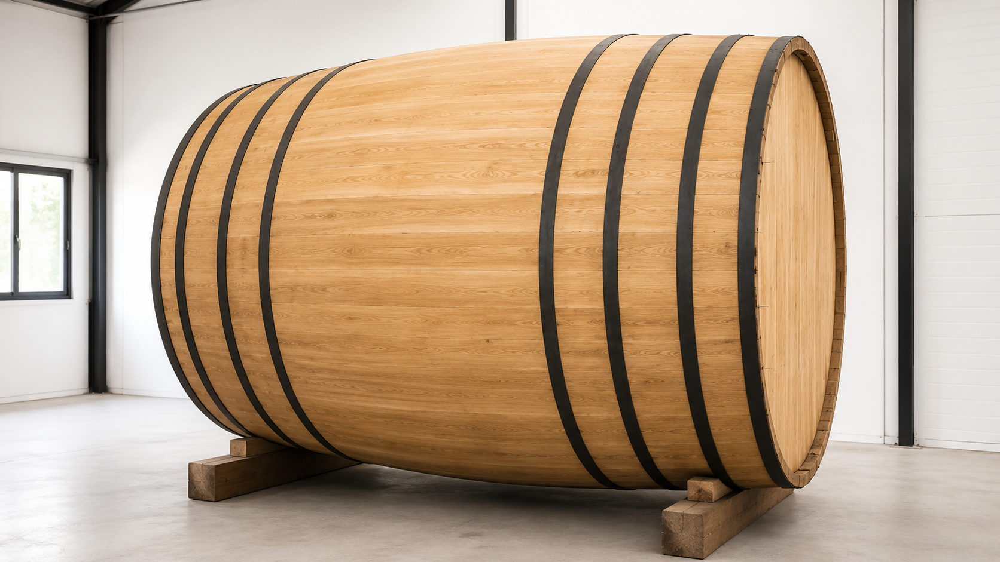
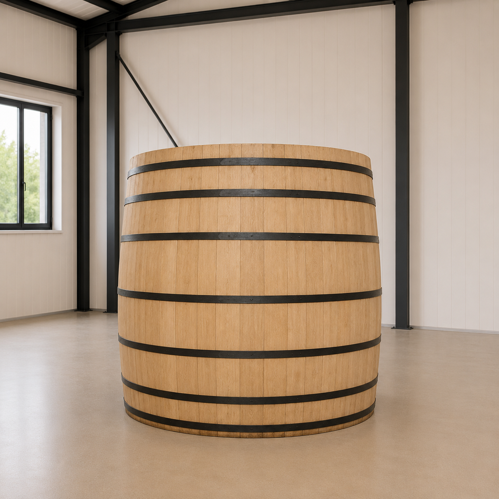
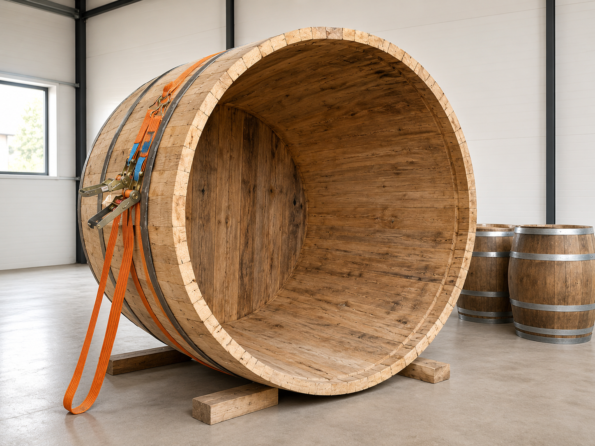
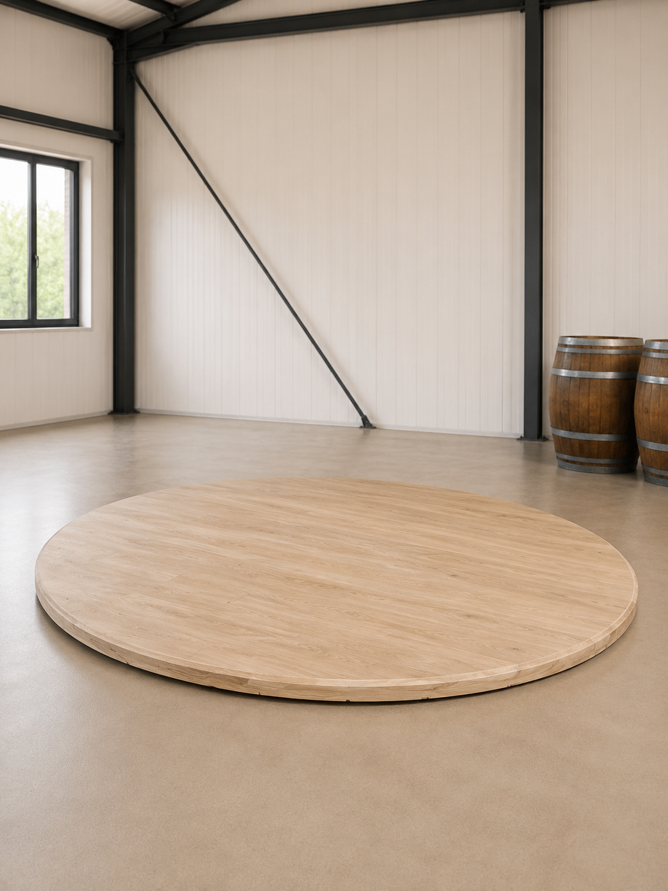
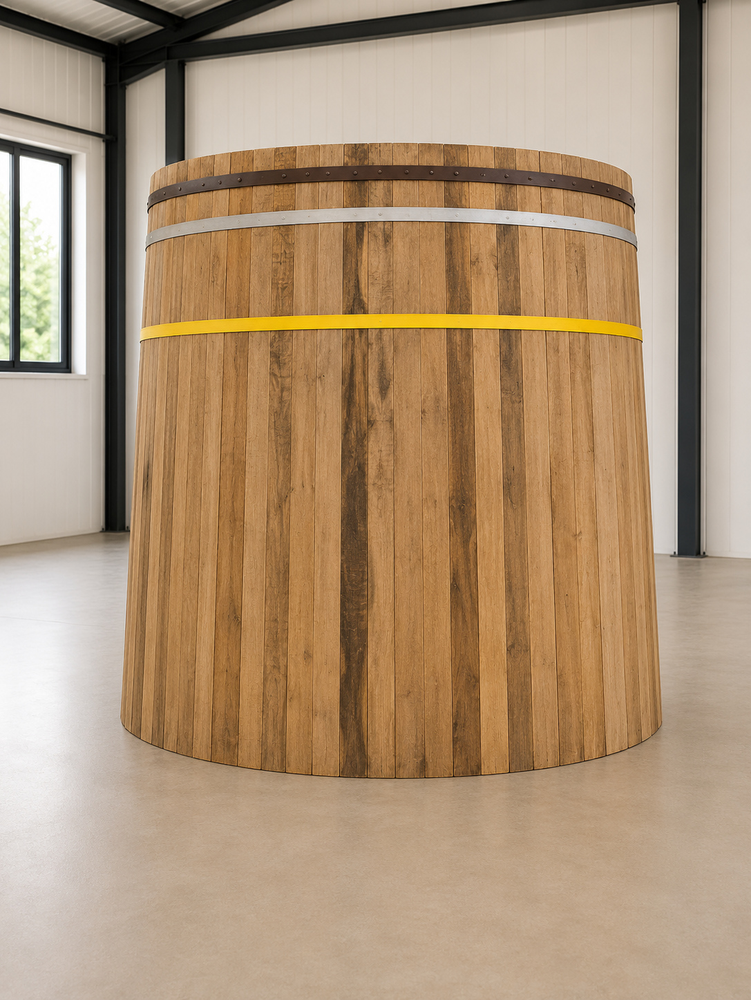

Ձեռագործ աշխատանք
Յուրաքանչյուր տակառ պատրաստվում է անհատական ուշադրությամբ՝ սկսած փայտի ընտրությունից մինչև վերջնական ստուգում։

Handcrafted in Armenia
Premium Armenian Oak Barrels
Հայկական կաղնուց պատրաստված ձեռագործ տակառներ՝ ստեղծված ավանդույթի, փորձի և ժամանակակից որակի համադրությամբ։
Մեր պատմությունը
BOCHKA-ի հիմքում ընտանիքի փորձն է, ձեռքի աշխատանքը և հարգանքը հայկական կաղնու նկատմամբ։ Դավիթ Ստեփանյանի համար այս ճանապարհը սկսվել է դեռ 16 տարեկանից, երբ նա հոր հետ սովորում էր փայտի լեզուն, տակառի ձևը և այն ճշգրտությունը, որը պահանջում է իսկական վարպետությունը։
Տարիների ընթացքում փորձը կատարելագործվել է։ Ինչպես լավ պահված պարունակությունը հասունանում է ժամանակի հետ, այնպես էլ այս արհեստը փոխանցվել է սերնդից սերունդ՝ դառնալով ավելի նուրբ, ավելի վստահ և ավելի որակյալ։

BOCHKA
Յուրաքանչյուր տակառ պատրաստվում է անհատական ուշադրությամբ՝ սկսած փայտի ընտրությունից մինչև վերջնական ստուգում։
Խիտ կառուցվածք, գեղեցիկ երանգ և բարձր դիմացկունություն՝ երկարատև օգտագործման համար։
3լ, 5լ, 10լ, 25լ և հատուկ տակառներ մինչև 225լ՝ մասնավոր և պրոֆեսիոնալ օգտագործման համար։
Մեր տակառները

Փոքր, էլեգանտ և գործնական տակառ՝ տան, նվերի կամ փոքր ծավալի պահման համար։ Նույն վարպետությունը՝ կոմպակտ ձևաչափով։
Ամենապահանջված փոքր չափերից մեկը։ Հարմար է նրանց համար, ովքեր ցանկանում են ունենալ հայկական կաղնու բնավորությունը փոքր ծավալով։

Հավասարակշռված չափ՝ գործնական օգտագործման և գեղեցիկ ներկայացման համար։ Ամուր կառուցվածք, մաքուր գծեր և երկար կյանք։

Ստեղծված ռեստորանների, հյուրանոցների և պրոֆեսիոնալ միջավայրերի համար։ Այն միավորում է ֆունկցիոնալությունը և ներկայանալի տեսքը։

Մեծ չափի տակառներ՝ պատրաստված պատվերով։ Չափը, կառուցվածքը, մետաղական օղակները և վերջնական տեսքը կարող են հարմարեցվել հաճախորդի պահանջներին։

Հայկական կաղնի
Հայկական կաղնին աճում է միջավայրում, որտեղ տաք ամառները, ցուրտ ձմեռները և լեռնային կլիման ձևավորում են ամուր և դիմացկուն փայտ։ Այդ բնական պայմանները կաղնուն տալիս են խիտ կառուցվածք, արտահայտիչ երանգ և երկարատև կայունություն։
BOCHKA-ում որակը սկսվում է հենց փայտի ընտրությունից։ Յուրաքանչյուր կտոր գնահատվում է ըստ կառուցվածքի, չորության և կիրառման նպատակի։ Միայն համապատասխան փայտն է անցնում արտադրության հաջորդ փուլ։
Արտադրություն
Ընտրվում է ամուր և որակյալ փայտ՝ ըստ կառուցվածքի և նպատակային օգտագործման։
Փայտը չորացվում է այնպես, որ պահպանվի կայունությունը և նվազեցվեն ներքին լարումները։
Փայտյա դետալները մշակվում են ճշգրիտ չափերով՝ ապահովելով ճիշտ նստեցում և ամրություն։
Տակառը հավաքվում է ձեռքով՝ պահպանելով ավանդական մոտեցումը և ժամանակակից որակի պահանջները։
Ըստ պահանջի կատարվում է վերահսկվող ներքին մշակում՝ երկար կյանք և ճիշտ օգտագործում ապահովելու համար։
Յուրաքանչյուր տակառ ստուգվում է մինչև հաճախորդին փոխանցվելը։
Պատկերասրահ

Կապ / Պատվեր
Անհատական պատվերների, համագործակցության և մեծածավալ արտադրության համար կապվեք Դավիթ Ստեփանյանի հետ։